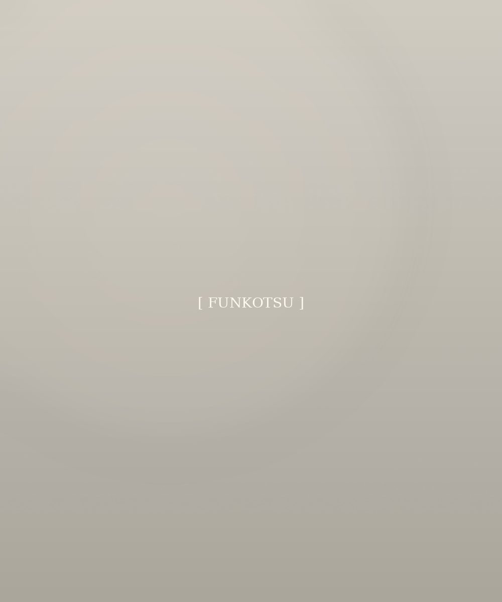
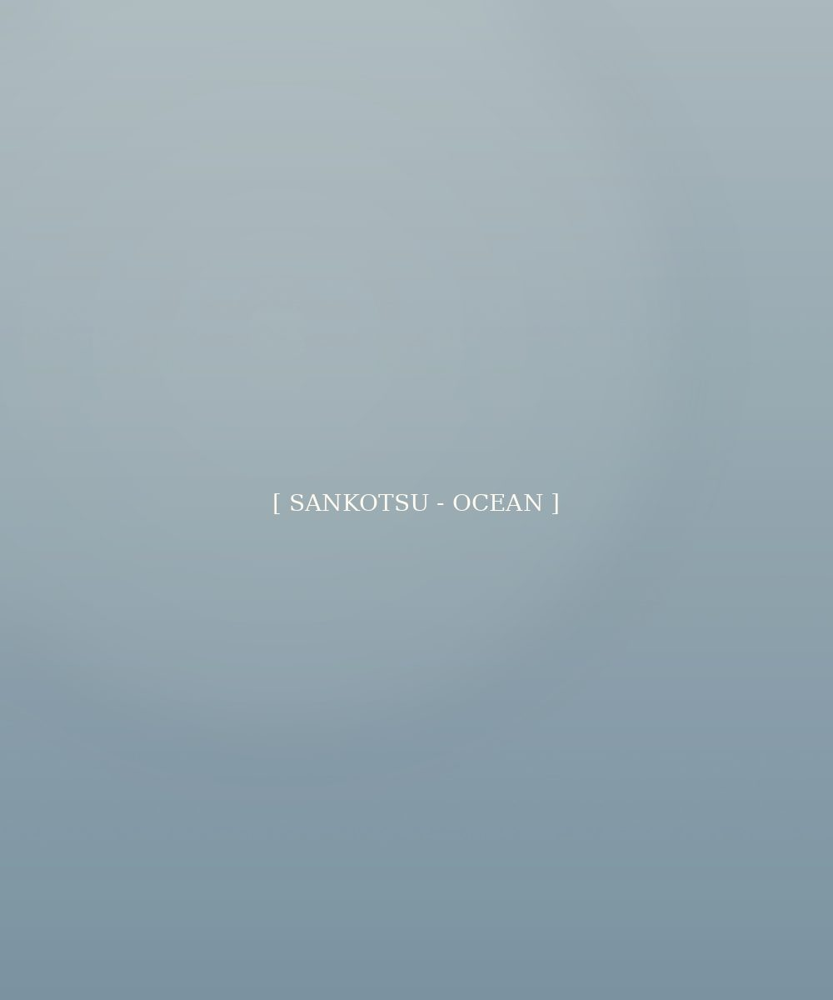
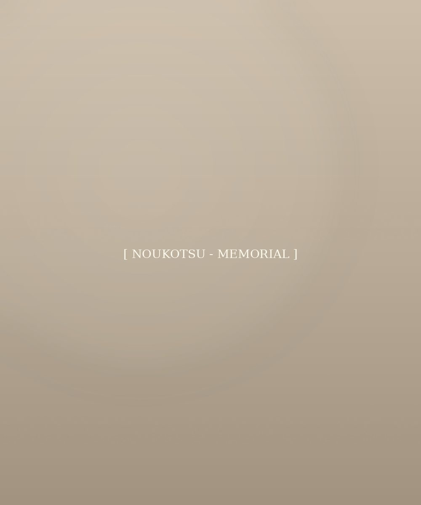

ペットのご遺骨を自宅で保管することに法律上の制限はなく、長く手元に置いていただくこと自体に問題はありません。一方で、骨壺のままの長期保管には湿気によるカビ・変色のリスクが避けられません。
ご火葬直後のご遺骨は無菌状態ですが、空気中の湿気を吸い込むことでカビが発生し、一度発生すると繁殖力は高く、骨袋にも広がっていきます。
最終的な供養の準備として粉骨を。パウダー状にして真空パックで密閉することで、酸素を遮断し半永久的に綺麗な状態を保てます。「そろそろ…」と思われた今が、最適なタイミングです。
最愛のご家族だから、
最後まで心を込めてお手伝いいたします。
ご遺骨の粉骨から、自然へ還す散骨、
いつでも会える納骨まで。
後悔しない供養の形を、
私たちと一緒に見つけませんか？
あの子のために何が一番いいんだろう…
そんなお悩み、一人で抱え込まないでください。
骨壺が大きくて、
湿気やカビも心配…
SOLUTION
粉骨で1/3〜1/5のサイズに凝縮。真空パックなら衛生的に長期保管できます。
散骨か納骨か、
まだ決めきれない
SOLUTION
一部を分骨して手元に残し、残りを散骨・納骨する「いいとこ取り」も可能です。
納骨堂が多すぎて、
どこが良いかわからない
SOLUTION
費用・アクセス・雰囲気が一目でわかる提携納骨堂比較で、最適な場所をご提案します。
大切なご家族をどうお見送りしたいか。
そのお気持ちから、ふさわしい供養のかたちが見つかります。
DIAGNOSTIC CHART
「ずっと身近に感じていたい」
粉骨手元供養
「大自然の中で、自由にさせてあげたい」
散骨海洋・自然葬
「家族みんなでお参りに行きたい」
納骨提携納骨堂
| 項目 | 粉骨 | 散骨 | 納骨（納骨堂） |
|---|---|---|---|
| こんな方に | コンパクトに保管したい | 自然に還したい | お参りの場所が欲しい |
| 費用目安 | 1.5万円〜 | 3万円〜 | 5万円〜 ＋管理費 |
| 所要日数 | 最短当日〜3日 | 約1〜2週間 | 即日〜相談 |
| 手元に残るもの | 全て（パウダー状） | 実施証明書・写真 | 供養プレート等 |

①
「大きな骨壺のままでは置けない」
「いつか散骨したい」という方のための基本ケアです。
徹底した個別管理 1柱ごとに器具を洗浄・消毒。他のお骨と混ざることは絶対にありません。
洗骨・乾燥対応 湿気で色が変わってしまったお骨も、専用設備で綺麗に整えます。
選べる仕上げ 持ち運べる小瓶、そのまま土に還る袋、長期保存の真空パックなど。

②
あの子が大好きだった外の世界へ、
心を込めてお見送りします。
安心の代行散骨 スタッフがご家族に代わり、鹿児島近海（または指定海域）にて献花・献酒と共に散骨いたします。
マナーの徹底 粉骨を徹底し、環境と周辺住民に配慮した独自の基準で実施します。
実施報告書 散骨した日時・正確なポイント（座標）を記した証明書を発行します。

③
「家にお骨があるのは寂しいけれど、
定期的にお参りしたい」という方へ。
ワンストップサポート 粉骨から納骨先への搬送・手続き代行まで、全てお任せいただけます。
厳選された提携先 「雨でもお参りできる屋内型」「他のお友達と賑やかな合同供養」「個別でゆっくりできる棚式」など、特徴別に選べます。
費用内訳の透明化 「当社作業費」と「納骨堂への実費」を明確に分けてご提示します。
納骨堂・霊園での永代供養には複数の形があります。それぞれの特徴を理解して、ご家族に合った形をお選びください。
| タイプ | 特徴 | 向いている方 |
|---|---|---|
| 合祀墓 | 他のペットと一緒に埋葬されるタイプ。 永代供養の中で最もリーズナブル。 |
費用を抑えたい方／お参りは合同で構わない方 |
| 個別墓 | 個別の墓石を設けて納骨。 遺骨を取り出すことも可能。 |
個別にしっかり供養したい方／あとで取り出す可能性のある方 |
| 納骨堂 | 屋内施設で遺骨を保管。 ロッカー型・仏壇型などがあり、雨でもお参りしやすい。 |
天候に左右されずお参りしたい方／管理面を重視する方 |
| 樹木葬 | 樹木を墓標にする供養方法。 自然に還してあげたい方に人気。 |
自然志向の方／管理を簡素にしたい方 |
ご家族のお気持ちに合わせて選べる、
粉骨・海洋葬・手元供養の組み合わせプラン。
粉骨作業・遺骨乾燥・骨壺処分すべて込みの安心価格です。
SET PLAN ─ OCEAN MEMORIAL
鹿児島近海で、スタッフがご家族に代わり献花とともに丁寧に散骨いたします。粉骨から散骨実施まで、すべてお任せいただける基本プラン。実施後は座標入りの実施証明書をお送りします。
SET PLAN ─ KEEPSAKE MEMORIAL（手元供養品 ＋ 粉骨セット）
やさしい卵型の手元供養品「たまごちゃん」と粉骨をセットに。コンパクトで毎日そばに置けます。初めての手元供養に。
上質な手元供養品（琴柱または玉璽）を専用の螺鈿ステージに飾る、品格ある供養スタイル。リビングのインテリアにも調和します。
透明感あふれるガラス製骨壺と、専用台＆エコー（ろうそく）を揃えたフルセット。本格的な手元供養スペースをご自宅に。
SET PLAN ─ OCEAN ＋ KEEPSAKE（海洋葬 ＋ 手元供養品 ＋ 粉骨）
ほとんどを海へ還しつつ、一部を分骨してたまごちゃんに納める「いいとこ取り」の人気プラン。手元と海、両方で見守れます。
散骨と上質な手元供養品の組み合わせ。海洋葬の安心感と、リビングに飾れる品格ある手元供養を両立する人気のプランです。
最も充実したプラン。海洋葬で自然へ還し、ご自宅にはガラス骨壺・供養台・エコーの本格セットで美しく祀ります。
※ すべての価格は税込・粉骨作業（遺骨乾燥・骨壺処分含む）込みの一括金額です。
※ ご遺骨の状態（カビ・湿気・水濡れ等）によっては別途洗骨費用がかかる場合があります。事前のお見積もりは無料です。
※ 上記以外のご要望（個別海洋葬、特定の手元供養品の組み合わせ等）もお気軽にご相談ください。
お預かりから作業完了まで、ご家族の心に寄り添う3つのお約束です。
専用のIDタグを装着。
取り違えを防止します。
全ての工程を写真で記録し、
ご希望の方には開示いたします。
知識豊富な専門スタッフが、
ご家族の心に寄り添い対応します。
ペットの供養に「正解」はありません。
だからこそ、選択肢を正しく知っておくことが、後悔しない供養への第一歩です。
ご家族のお気持ちに寄り添う情報を、誠実にお伝えします。
ペットのご遺骨を自宅で保管することに法律上の制限はなく、長く手元に置いていただくこと自体に問題はありません。一方で、骨壺のままの長期保管には湿気によるカビ・変色のリスクが避けられません。
ご火葬直後のご遺骨は無菌状態ですが、空気中の湿気を吸い込むことでカビが発生し、一度発生すると繁殖力は高く、骨袋にも広がっていきます。
最終的な供養の準備として粉骨を。パウダー状にして真空パックで密閉することで、酸素を遮断し半永久的に綺麗な状態を保てます。「そろそろ…」と思われた今が、最適なタイミングです。
粉骨の品質は、その後の供養のしやすさを左右します。当社では専用設備で1mm以下の細かなパウダー状に仕上げます。
このサイズまで粉骨することで：
ご自宅での粉骨も技術的には可能ですが、骨壺を開けてご家族のご遺骨と直接向き合う精神的負担は大きく、また均一なパウダー状に仕上げるのは困難です。
ペットの散骨を禁止する法律はありません。環境省も「葬送の目的で相当の節度をもって行う限り、廃棄物に該当しない」との見解を示しています。
ただし、法律上問題がないからといってどこで散骨してもよいわけではありません。お骨を撒く行為が周りの方に不快感を与えてはいけません。守りたいマナーは：
当社の代行海洋葬は、独自の運用基準のもと、環境と周辺住民へ徹底配慮した形で実施します。
散骨や納骨の時期に決まりはありません。ご家族のお気持ちに整理がついたタイミングが最適です。一般的には：
お供えするものも形式にこだわらず、あの子が生前喜んだものが一番です。お水、好きだったおやつ、お花、お写真、お気に入りのおもちゃ — ご家族の心を込めたものすべてが、立派な供養になります。
鹿児島県を拠点に、ペットのご遺骨に関わる
粉骨・散骨・納骨をワンストップでサポート。
鹿児島近海を熟知した地元事業者として、
大切なご家族のお見送りを丁寧にお手伝いします。
鹿児島近海専門
地元の海域を知り尽くした
安心の代行海洋葬
1mm以下
高品質パウダー粉骨
散骨にも安心の細かさ
全国対応
鹿児島県外も郵送で
丁寧なご対応をお約束
お電話、またはLINEから、
今の状況をお聞かせください。
ご家族のペースに合わせて、
最適な供養の形を一緒に考えます。
受付時間 9:00〜18:00（日曜定休）／ 相談・お見積もり無料